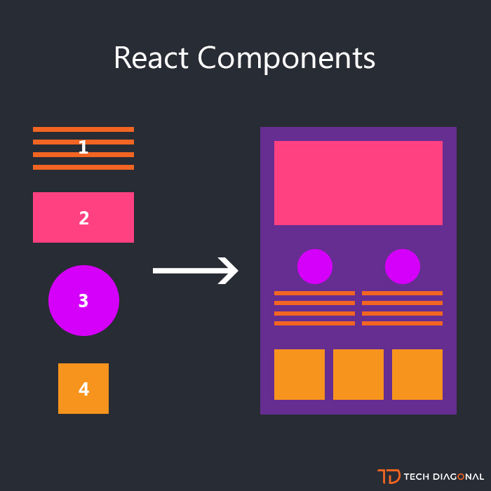

React
Created by Hurin Vlad for RS SCHOOL
History
React was created by Jordan Walke
It was influenced by XHP, a component HTML framework for PHP.
Usage
The most common use of React is when building a single page application.
Its goal is to provide high development speed, simplicity and scalability.
Usage
As a library for developing user interfaces, React is often used with other libraries such as MobX, Redux, and GraphQL.
React features
React uses JSX preprocessor.
Reconciliation algorithm.
VDOM
Hidden Slides
This slide is visible in the source, but hidden when the presentation is viewed. You can show all hidden slides by setting the `showHiddenSlides` config option to `true`.
JSX
JSX is, something between JS and HTML.
Simple example
const element = Hello, world
;
Simple example
It will be transform to this code
"use strict"
const element = React.createElement("h1", null, "Hello world!");
Simple example
Also you can insert any attributes in bracese inside a JSX expression
const newID = "hello"
const element = Hello, world
;
Reconciliation algorithm
React uses a special algorithm that allows you to track changes in the user interface and change only it, and not the entire application.
VDOM
Virtual DOM (VDOM) is a programming concept in which an ideal or “virtual” representation of a user interface is stored in memory and synchronized with the “real” DOM using a library such as ReactDOM.
Why VDOM?
The purpose of the virtual tree in React is very simple. you do not need to store all the settings for each node, instead you store its "light" version.
ELEMENT
Smallest block of React application.
Describe what will be disblayed on the screen.
Easy to create
React element are immutable
Simple example
const element = Hello, world
;
Element Rendering
const element = Hello, world
;
ReactDOM.render(element, document.getElementById('root'))
Componets
Components let you split the UI into independent, reusable pieces, and think about each piece in isolation.
Componets representation
You can represent it like function
function Welcome(props) {
return Hello, {props.name}
;
}
or class
class Welcome extends React.Component {
render() {
return Hello, {this.props.name}
;
}
}
Function components
Should be used only when we need to render some part of UI
Class components
Should be used when component is more complex
Component props
const element = <Welcome name="Mark" />;This attribute will be specified to the component in this.props:
class Welcome extends React.Component {
render() {
return Hello, {this.props.name}
;
}}
Outcome
Easy to integrate with other framework
JSX and VDOW increases application perfomance and code readability
Can be rendered on server and client